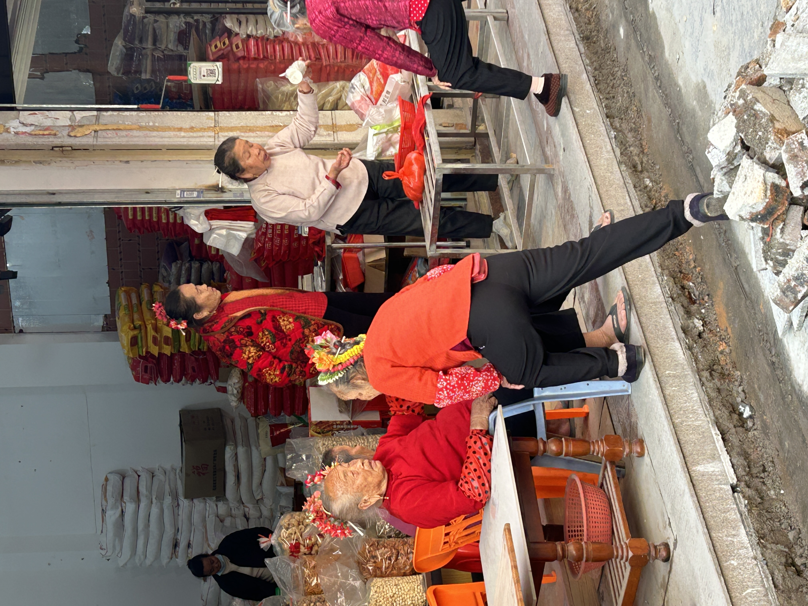

“今生戴花，来世漂亮。”
这句流传在泉州蟳埔村的古老谚语，道尽了海边渔家女对美的极致追求。
01. 海丝遗韵：宋元刺桐的异域芳华
簪花围的历史，是一部浓缩的“海上丝绸之路”交流史。宋元时期，泉州（古称“刺桐”）作为东方第一大港，万国商船云集。据史料考证，如今簪花围中常用的素馨花、含笑花、粗糠花等，多为彼时阿拉伯人引进的异域花种。
阿拉伯商人不仅带来了香料与奇花异草，也将其种植技术留在了蟳埔一带的鹧鸪山下。这些沿着海丝之路漂洋过海的繁花，最终在蟳埔女的发髻上生根发芽，成为中外文化交融的绝佳见证。

图1：簪花围中常用的素馨花等具有异域渊源
02. 闽越遗风：骨笄作骨的千年传承
如果说鲜花是簪花围的“肉”，那么那一根穿过发髻的“骨笄”则是它的“骨”。蟳埔女盘发时使用的骨笄，保留了中国古代妇女“笄礼”的古老遗风，更是古代闽越族人“断发纹身”、“髻椎以骨”习俗的活化石。
在历史长河中，中原汉族文化与闽越土著文化在泉州这片土地上碰撞、融合。骨笄不仅起到了力学上的支撑作用，方便渔女们在海风中劳作而不散发，更承载着尊祖敬宗的深厚文化内涵。

图2：承载闽越遗风的传统骨笄
03. 精神图腾：惊涛骇浪中的柔韧力量
蟳埔村位于晋江入海口，自古以来，男人出海捕鱼，女人则承担起滩涂劳作、挑海鲜叫卖以及操持家务的重任。在艰苦的渔猎生活中，簪花围不仅是装饰，更是蟳埔女精神力量的外化。
无论生活多么辛劳，无论年纪多大，蟳埔女都会在头上簪满鲜花。这些色彩明艳的花朵，象征着她们对生活的热爱、对光明的向往以及如海草般坚韧不拔的品格。簪花围，是她们在惊涛骇浪中为自己加冕的皇冠。

图3：簪花是蟳埔女坚韧与乐观的精神图腾